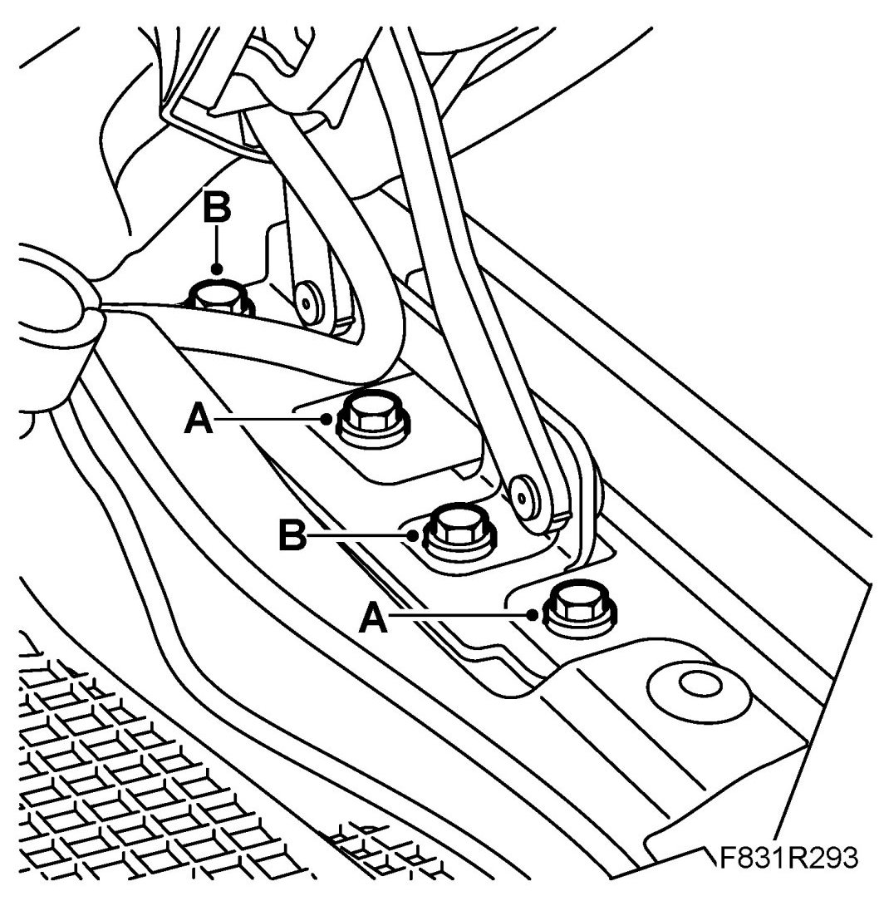
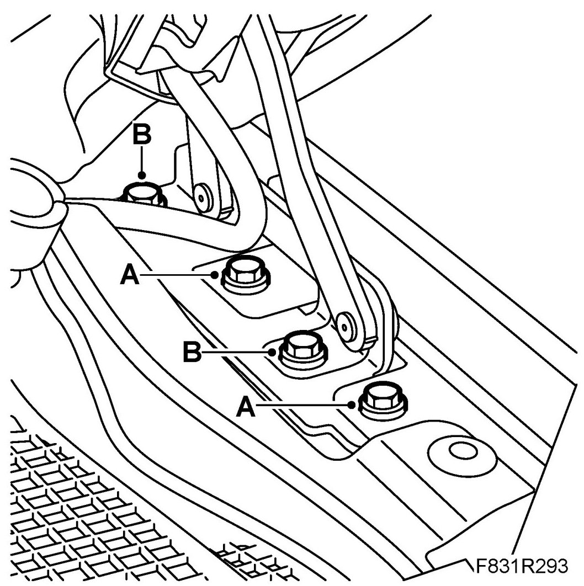

Hood Hinge: Service and Repair
Bonnet, Hinge
To remove
1. Remove the Bonnet.
2. Remove the front wing's bolts (A).

3. Remove the hinge bolts (B).
4. Remove the hinge.
To fit
1. Put in place the hinge.
2. Fit the hinge bolts (B).
Tightening torque up to and including M06 10 Nm (7 lbf ft)
Tightening torque from and including M07 8 Nm (6 lbf ft)

3. Fit the front wing's bolts (A).
4. Fit the Bonnet.
5. Adjust the bonnet as necessary, see Bonnet, adjustment